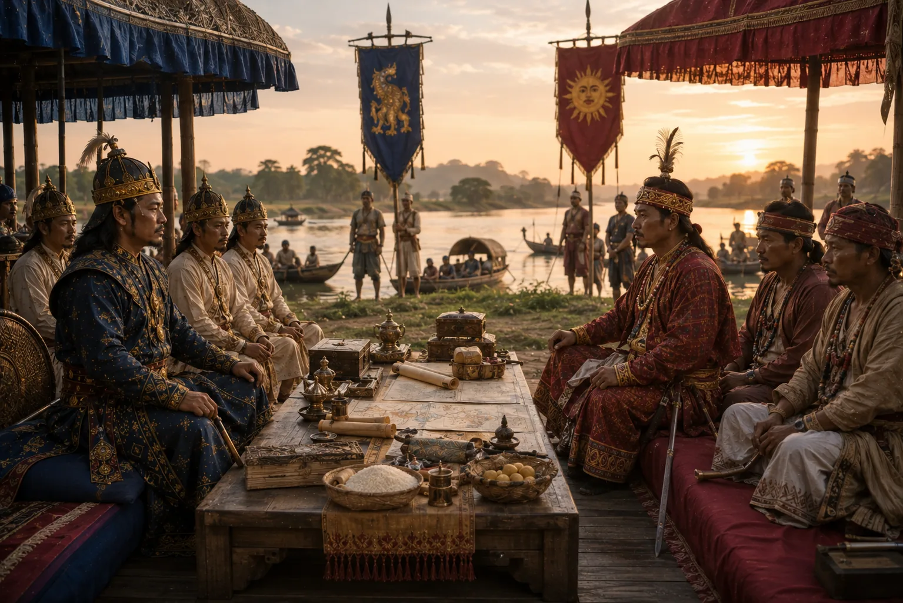

The Treaty of Majuli
1563 · Swarganarayan’s kingdom

Peace treaty negotiated on Majuli island; Ahoms cede north bank lands and send royal hostages, enabling subsequent reclamation after Koch departure.
Sources have not yet been catalogued for this record.
People: Chilarai (Sukladhwaj), Sukhaamphaa (Khora Roja)
Open this scene in the interactive archive · Follow this event on MAP